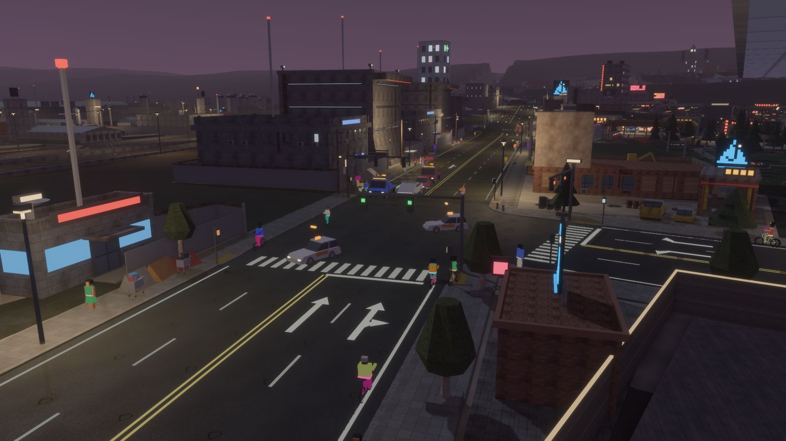

Lane-level traffic
- Cars follow, brake and change lanes in a smooth glide, zip-merge where lanes end and route across the whole lane graph.
- Actuated signals with protected left arrows; lane arrows set from the turning counts or by you.
- Highways with ramps that merge without lights, and a diamond interchange preset.
- Toll booths priced per lane, road wear, road rage, street races and warehouse raves after dark.